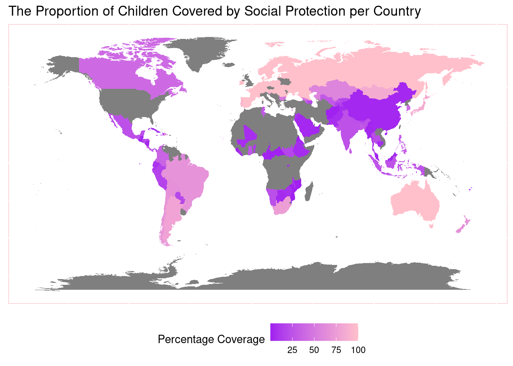
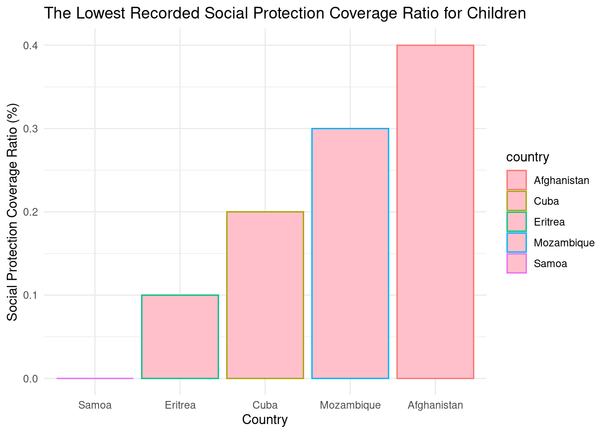
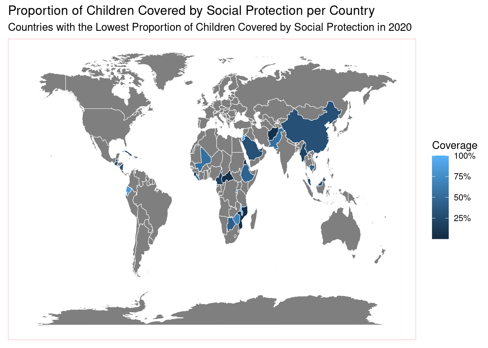
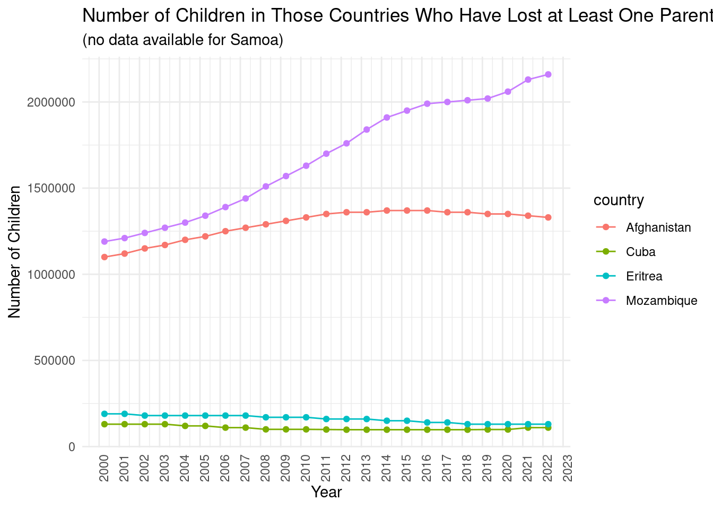
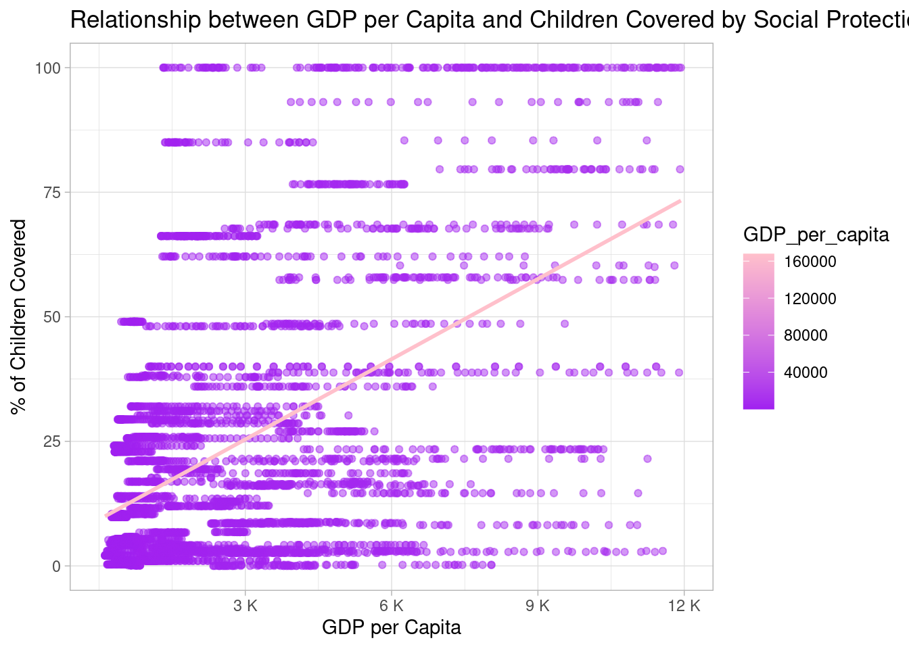

Global Child Welfare: Analyzing Social Protection Coverage and Parental Loss Across Nations
Author
Kelly Bourke Cosgrave
Published
April 6, 2024
Introduction
Children are the key to our future, and ensuring their well-being is a responsibility that transcends borders and cultures. This report is dedicated to shedding light on the vital role of social protection in shaping the lives of children across the globe. Within this dashboard, you will find a curated selection of key metrics and indicators, allowing you to explore and understand the dynamics of social protection for children.
- proportion of children covered by social protection programs
- estimated number of children who have lost at least one parent
Each visualization serves as a lens through which we can better comprehend the challenges and successes in this critical realm.
A Demonstration of the Proportion of Children Covered by Social Protection Accross the Globe
High Coverage Nations: Certain nations stand out with deep shades, indicating a high proportion of children covered by social protection. These countries may serve as positive examples, showcasing effective policies and initiatives that can be studied and potentially replicated in regions with lower coverage.
Low Coverage Areas: Areas with lighter shades signify lower social protection coverage for children. Exploring the underlying factors contributing to these disparities is crucial for policymakers and advocates to address gaps in child welfare systems and enhance overall societal well-being.
An Exploration into the Nations which have the Lowest Social Protection Coverage Ratio for Children
In this section we will review data surrounding the nations with the lowest percentage of children covered by social protection through:
A bar chart showing the % coverage in the bottom 5 nations
The countries represented geographically on a map
A time series showing the number of children in these countries who have lost at least one parent in the last 20 years
1. The Five Nations with the Lowest Social Protection Coverage Ratio for Children

In the mosaic of global child welfare, certain nations stand out with challenges in providing social protection for their youngest members. Afghanistan, Cuba, Eritrea, Mozambique, and Samoa find themselves among the five nations grappling with the lowest proportion of children covered by social protection. These countries illuminate the diverse struggles that communities face in safeguarding the well-being of their children. The data on social protection coverage serves as a poignant reminder of the urgent need for targeted efforts and international collaboration to address disparities and uplift vulnerable youth. By acknowledging these challenges, the global community can work collectively to implement effective strategies and interventions that contribute to a brighter and more secure future for children worldwide.
2. Countries with the Lowest Ratio of Children Protected Reflected Geogprahically

The color gradient, ranging from light to dark blue, indicates the levels of coverage, with darker shades representing higher percentages.
A few observations can be made:
Geographical Spread: There is a global spread in the representation of countries, suggesting that the issue of children’s social protection is of worldwide concern.
Variation in Coverage: There’s noticeable variation in social protection coverage for children. Some countries appear to have very high coverage, while others have significantly lower rates.
Concentration of Data Points: It looks like the majority of the countries with the lowest coverage are concentrated in Africa, with some in Asia and the Americas, pointing towards possible regional trends or disparities.
Data Interpretation: The map serves as an important tool for identifying regions where children might be at a higher risk due to lack of social protection. It could be instrumental for policymakers, international organizations, and NGOs when planning interventions.
3. Number of Children in the Bottom Five Countries who have Lost at Least One Parent Over 20 Years

In tandem with the challenges faced by Afghanistan, Cuba, Eritrea, Mozambique, and Samoa in providing adequate social protection, the somber time series below, spanning from 2000 to 2022 reveals the estimated number of children who have lost at least one parent in these nations. The interplay of limited social protection coverage and the ripple effects of parental loss encapsulates the multifaceted struggles within these communities. Together, these narratives weave a comprehensive tale of the intricate web of challenges faced by children in these regions, emphasizing the critical need for global attention and collaborative efforts to fortify child welfare systems, ensuring a more secure and supportive future for the world’s most vulnerable youth.
Linking Prosperity to Protection: The Interplay Between GDP per Capita and Child Social Safety Nets

In this illuminating scatter plot, a discernible positive relationship emerges between a country’s GDP per capita and the percentage of children covered by social protection. As GDP per capita increases, there is a gradual and optimistic rise in the proportion of children benefiting from social protection measures. This observation signifies that, in general, economically prosperous nations tend to allocate resources towards robust social safety nets for their youth. This positive correlation emphasizes the pivotal role economic well-being plays in shaping comprehensive social protection policies for children. Understanding and leveraging this relationship allows for more informed policymaking, as nations strive to not only bolster their economic foundations but also ensure the holistic well-being of the youngest members of society, laying the groundwork for a more secure and prosperous future.
In Conclusion
In concluding this exploration into global child welfare, the poignant narratives of social protection coverage and parental loss underscore the need for collective action. Examining nations such as Afghanistan, Cuba, Eritrea, Mozambique, and Samoa reveals not only the challenges arising from limited social protection but also the profound impact of parental loss on young lives. Amidst these complexities, the dashboard illuminates a positive relationship between child social protection and both GDP per capita across countries. This correlation accentuates the interconnected dynamics between economic prosperity and the well-being of our future generations. As we navigate through the data, it becomes evident that prioritizing and fortifying child welfare initiatives globally is not only a moral obligation but also a strategic investment in building resilient, healthy, and prosperous societies.
This report serves as a catalyst for informed decision-making, encouraging collaborative efforts to ensure a world where every child is afforded the opportunity to thrive and contribute to a brighter future.